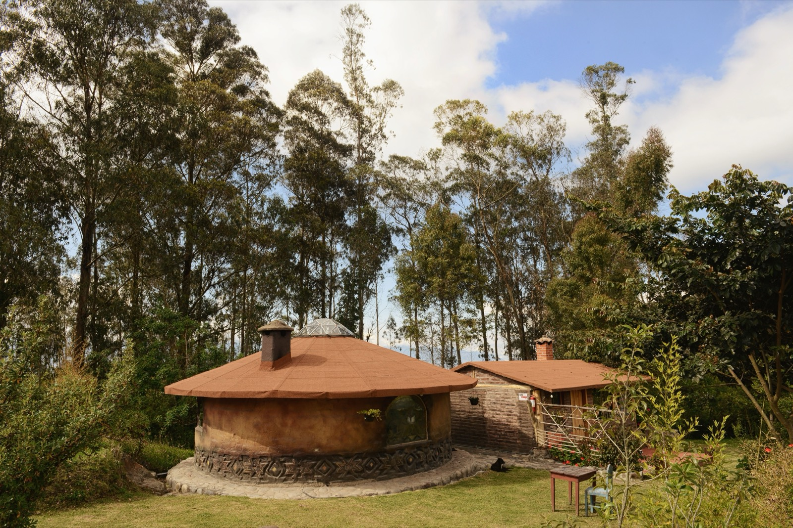

Earthship Homes
Off-grid homes built from rammed-earth tires that make their own power, catch their own water, and grow food inside. Radically self-sufficient — and radically labor-intensive.

An earthship isn't just a building method — it's a whole self-sufficiency system. Walls of old tires rammed full of earth form a thermal-mass battery, a south-facing glass greenhouse heats the home and grows food, solar panels make power, and rainwater is caught, stored, and cycled through the plants. Developed by architect Michael Reynolds, it's the most ambitious off-grid concept in natural building — and the most labor-intensive.
How it works
The back and side walls are earth-rammed tires (free waste material, enormous thermal mass), often bermed into a hillside; interior walls use bottles and cans set in cob. A sloped glass front captures winter sun. Systems for solar power, rainwater catchment, greywater planting beds, and blackwater treatment make the home function independent of the grid. It's designed as a closed-loop dwelling, not just a shell.
What does it cost?
Confusingly variable. The tire walls use free material but demand brutal amounts of labor (each tire is pounded full of earth by hand); the systems (solar, water, glass) add real cost. DIY earthships can be built relatively cheaply in sweat; turnkey earthships from the original builders are not cheap once systems and finishes are counted. (Highly variable; DIY vs turnkey swings it wildly.)
The trade-offs at a glance
| Factor | Rating | Notes |
|---|---|---|
| Cost | 🟡 | Free tire material; systems + labor add up |
| Self-sufficiency | 🟢 | Off-grid power, water, food — unmatched |
| Sustainability | 🟢 | Reused materials, closed loops |
| Build speed | 🔴 | Pounding tires is punishingly slow |
| Heat/climate fit | 🟡 | Designed for high-desert swings, not humid tropics |
| Aesthetics | 🟡 | Distinctive/organic — not for everyone |
| Seismic/wind | 🟢 | Massive bermed earth walls are stable |
| Permitting/finance | 🔴 | Unconventional — real code and mortgage battles |
Buildability — how hard is it to actually build?
Earthships are buildable by determined owner-builders (there's a whole community and training program), but they are labor-brutal — hand-ramming hundreds of tires is the definition of sweat equity — and the integrated systems (solar, catchment, greywater) require real technical competence. The bigger issue is fit: the design was optimized for the high-desert (huge day-night temperature swings the thermal mass smooths out). In the humid tropics, the thermal-mass advantage shrinks, the greenhouse can overheat, and moisture management gets harder — so a tropical earthship needs serious redesign (ventilation, shading, moisture control) rather than a copy-paste. And permitting/financing an unconventional tire home is often the hardest part of all.
Thinking about building in Panama or Costa Rica?
SORA is a fixed-price design-build platform for foreign buyers. We build in reinforced concrete by default — and we can talk you through when an alternative method actually makes sense for the tropics. Play with cost live in the 3D configurator.
See real 2026 build costs →Frequently asked questions
How much does an earthship cost to build?
It varies enormously. The tire walls use free material but require immense manual labor, and the off-grid systems (solar, water catchment, greywater) add significant cost. Owner-built earthships can be relatively cheap in materials; professionally built, fully-systemed earthships are not cheap.
Do earthships work in tropical climates?
Not without redesign. Earthships were engineered for high-desert climates with big day-night temperature swings that their thermal mass evens out. In the humid tropics that advantage shrinks, the solar greenhouse can overheat, and moisture control is harder — so the concept needs real adaptation, not a direct copy.
Are earthships hard to permit?
Often, yes. Because they're unconventional (tire walls, integrated off-grid systems, non-standard design), earthships frequently run into building-code and mortgage/insurance hurdles, which can be the most difficult part of the whole project.
Sources & verification
Figures in this guide were checked against primary and authoritative sources on 27 July 2026. Immigration, tax, and cost figures change — always confirm the current rules with the official body or a licensed professional before acting.
- Natural Building Blog — earthen/off-grid resilience
- Build With Rise — natural building